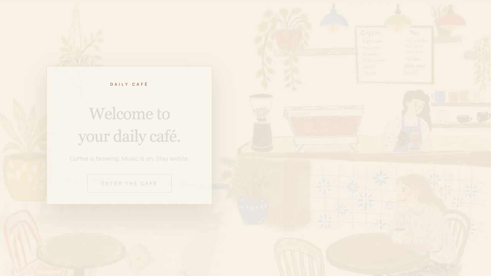

Choreography, not decoration
Motion
Type, images and navigation respond with purpose—guiding attention and making the interface feel alive.
↗Educator · designer · vibe coder · curious maker
I make thoughtful digital experiences where learning, atmosphere and playful interaction meet.
Explore selected work ↘Interaction study / 01
Each technology has a job. Hover the cards to see the hierarchy shift without breaking the layout.
Choreography, not decoration
Type, images and navigation respond with purpose—guiding attention and making the interface feel alive.
↗Depth without visual weight
Translucent surfaces establish hierarchy while preserving the atmosphere and colour moving behind them.
↗A single dimensional moment
A lightweight 3D object gives the opening scene presence, while the rest of the portfolio stays direct.
↗Selected work / 02
Spatial effects create atmosphere around the projects; they never compete with the case studies themselves.

Open project ↗An illustrated café for music, focus and a small moment of calm.
 Open project ↗
Open project ↗
A trail of clues and branches that turns plant knowledge into discovery.